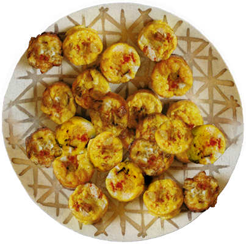

Ingredients
- 2 tbsp. EVOO
- 1 large Potato (1/2 lb.), cut into 1/4 inch pieces
- 1 small Onion, finely chopped
- 4 Eggs, beaten
- hot smoked Paprika
Instructions
- Preheat oven to 375.
- In skillet, heat EVOO over medium heat.
- Add onion.
- Cook until potatoes are tender and lightly browned. about 5 minutes; season.
- Divide potato mixture between 2 nonstick mini-muffin pans; pour beaten eggs on top.
- Bake until set puffed. about 12 minutes.
- Sprinkle with paprika.